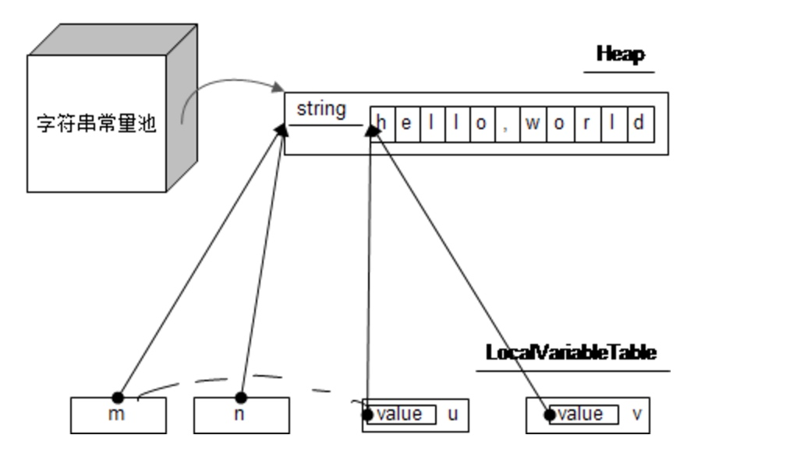

字符串对象内部是用字符数组存储的
String m = "hello,world";
String n = "hello,world";
String u = new String(m);
String v = new String("hello,world");
这些语句会发生这么些事情：
1. 会分配一个长度为11的char数组，并在常量池分配一个由这个char数组组成的字符串，然后由m去引用这个字符串
2. 用n去引用常量池里面的字符串，所以和n引用的是同一个对象
3. 生成一个新的字符串，但是内部的字符数组引用着m内部的字符数组
4. 生成一个新的字符串，但是内部的字符数组引用常量池里面的字符串内部的字符数组

字符串常量通常是在编译的时候就确定好的，定义在类的方法区里面；也就是说，不同的类，即使用了同样的字符串，还是属于不同的对象。
字符串的操作细节
String m = "hello,world";
String u = m.substring(2,10);
String v = u.substring(4,7);

m,n,v是三个不同的字符串对象，但引用的value数组其实是同一个。
但是字符串操作时，可能需要修改原来的字符串数组内容或者原数组没法容纳的时候，就会使用另外一个新的数组（例如replace，concat，+等操作）
String m = "hello,";
String u = m.concat("world");
String v = new String(m.substring(0,2));

常量池中字符串的产生
String m = "hello,world";
String u = m + ".";
String v = "hello,world.";
u和v虽然是一样的内容的字符串，但是内部的字符数组不是同一个。
如果将m定义为final，编译器就会把u和v做成一样的了。
Reference
http://www.importnew.com/17034.html